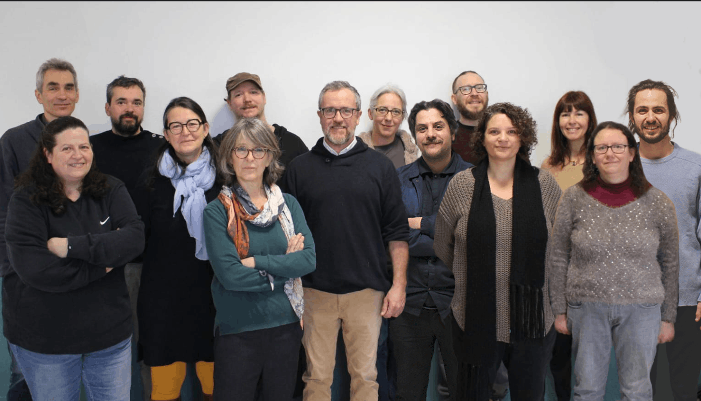
Qu’est ce qu’une liste citoyenne participative
C’est une liste électorale construite avec les habitants, où chacun peut contribuer au programme et à la composition de la liste des candidats. Elle vise à impliquer directement les citoyens dans la vie locale et à faire émerger un projet qui reflète leurs besoins et aspirations.
Parce qu’on peut faire de la politique autrement, à partir des besoins réels du terrain, en associant les habitants directement aux décisions qui les concernent.
Plus d’infos : www.frequencecommune.fr/
Assemblées citoyennes
Nous avons organisé 2 assemblées citoyennes en janvier et février 2026 afin de construire avec les Salonnaises et Salonnais les contours du prochain mandat municipal
- Les thèmes qui sont ressortis concernent notamment :
- La vie de village
- La mobilité locale
- Les professionnels de santé
- La voirie
- La gestion de la ressource en eau
- Le patrimoine bati et naturel
Ces thèmes ont été intégrés à notre profession de foi.
Profession de foi
Nous souhaitons réinventer l’action publique dans notre commune, en dehors de tout parti politique traditionnel. Nous défendons une façon collective de gérer la ville, une implication directe des habitants dans l’élaboration du programme et le choix des priorités, tout au long de la mandature.
Seule une politique locale horizontale, transparente, peut permettre de répondre aux besoins concrets de tous les habitants, de construire ensemble une proposition collective pour notre commune.
Le programme est élaboré avec les habitants qui ont participé aux réunions publiques.
Démocratie
Nous proposons à tous les salonnais et salonnaises de construire ensemble l'avenir de notre commune.
- Constituer des comités consultatifs thématiques composés d’habitants, d’élus, d’agents, d’experts, pour mettre en place un système de communication efficace et transparent.
- Recueillir et prendre en compte la voix de chaque habitant lors d'assemblées publiques régulières ouvertes à toutes et à tous.
- S’appuyer sur les assemblées pour définir les politiques budgétaires (projets, impôts, subventions).
L'objectif sera de favoriser les échanges directs entre les élus et les citoyens.
Attractivité de la commune
Les conclusions des premières assemblées publiques ont mis en évidence l'importance de :
- Repenser les questions de mobilité locale.
- Trouver des solutions pérennes concernant l'accès aux soins pour toutes et tous.
- Soutenir l’école du village.
- Favoriser le développement économique et repenser l’installation d’un marché local.
- Valoriser les acteurs socio-culturels tels les associations, commerces, collectifs.
Ainsi Salon-la-Tour sera un village attractif, dynamique et accueillant.
Vivre ensemble
Nous avons à cœur de :
- Développer l’entraide et lutter contre l'isolement.
- Faciliter les liens intergénérationnels.
- Accompagner l’accueil des nouveaux habitants de Salon-la-Tour.
La solidarité et le respect de chacun et chacune seront une priorité centrale.
Les biens communs
Salon-la-Tour est une commune chargée d’histoire, au patrimoine précieux. Nous nous engageons à :
- Préserver le bâti ancien, les terres agricoles, les forêts et la biodiversité.
- Protéger l’eau et repenser sa gestion.
- Répertorier, restaurer, entretenir et baliser les chemins communaux.
- Décider collectivement des critères de réfection et d'aménagement des voiries.
Les biens communs feront l'objet de concertation afin d'arriver à une planification judicieuse.
Représentation au niveau des institutions
Beaucoup de décisions impactant Salon-la-Tour sont prises par des institutions placées au-dessus de la commune (communauté de communes, département, région, etc...). En tant qu'élus, nous représenterons au mieux les intérêts de notre village :
- Faire le lien entre les citoyens et ces institutions.
- Établir des partenariats économiques, culturels et sociaux.
En portant la voix de Salon-la-Tour, nous veillerons à être entendus et pris en considération.
Les Candidats
Citoyens de Salon de longue date ou fraîchement arrivés, la diversité de nos expériences et les compétences qui en découlent nous permettront : d’animer la démocratie locale que nous défendons, de mener à bien les recherches de financement nécessaires aux projets des habitants de la commune et d'accompagner les personnes en divergence d'opinion en proposant une médiation efficace qui prenne en compte les intérêts de chacun.
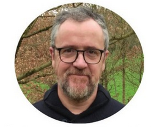
David Martinez54 ans
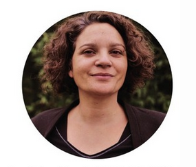
Marie Adinarayanin43 ans
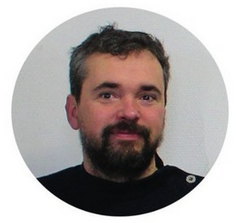
Antoine Tournié41 ans
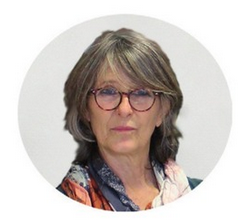
Isabelle Renaudie60 ans
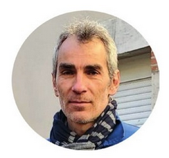
Cédric Poilly52 ans
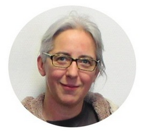
Caroline Peres47 ans
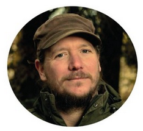
Damien Dekarz46 ans
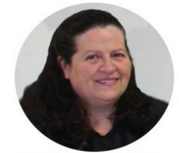
Séverine Hely54 ans
47 ans
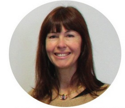
Karine Béchade52 ans
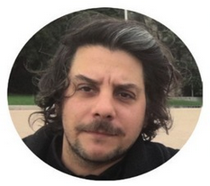
Philippe Roux37 ans
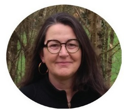
Hélène Martinez53 ans
29 ans
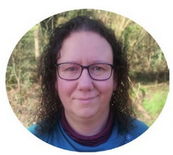
Jennifer Perrin39 ans
Nous contacter
Vous pouvez nous contacter :
- par téléphone ☎️ : 0781955942
- par mail 📧 : listecitoyenne-salonlatour@mailo.com
- via facebook en cliquant ici